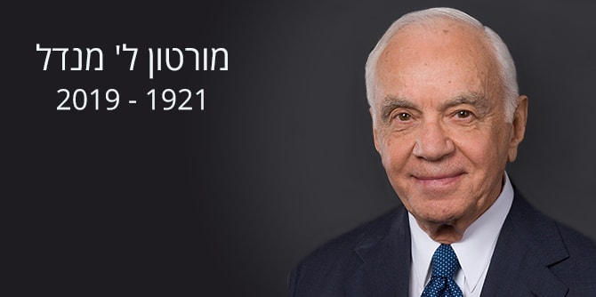

מורטון ל' מנדל, מייסד ויו"ר קרן ג'ק, ג'וזף ומורטון מנדל, נפטר אמש בפלורידה.
מנדל, איש עסקים מצליח, היה גם מנהיג בעל שיעור קומה, ציוני נלהב, אוהב ישראל, איש חזון ופילנתרופ נדיב. תרומתו העצומה למוסדות רבים בישראל הסתכמה ביותר מחצי מיליארד דולר.
מנדל יזם והקים את בית ספר מנדל למנהיגות חינוכית, שהכשיר עד כה מאות מנהיגים חינוכיים הפועלים בכל מגזרי החיים במדינה, את מכון מנדל למנהיגות, המכשיר זה כמעט שלושים שנה מנהיגים אזרחיים בתחומי החינוך והחברה, ואת מרכזי מנדל למנהיגות בנגב ובצפון.
בין תרומותיו הרבות: תרומה של 25 מיליון דולר לאקדמיה לאמנות בצלאל להקמת קמפוס חדש במרכז ירושלים; סכום מצטבר של כ-50 מיליון דולר לפיתוח לימודי מדעי הרוח באוניברסיטה העברית בירושלים; 25 מיליון דולר לפרויקטים בעיר באר שבע (מוזיאון הילדים "לונדע" ומרכז קיימות לבעלי חיים); 13 מיליון דולר להקמת מכון למנהיגות חברתית באוניברסיטת בן גוריון; 7 מיליון דולר להקמת מרכז חדשנות בירוחם; תוכנית ללימודי מדעי הרוח לתלמידים מצטיינים בהנדסה ובמדעים באוניברסיטת תל אביב, ועוד.
מנדל היה מסור למדינת ישראל, האמין בה, בייעודה ובעתידה. הוא הדגיש פעמים רבות את חשיבות לימודי מדעי הרוח והשקיע בכך מכספו וממרצו, מתוך אמונה בחשיבותה של תשתית ערכית לפעילות בכל תחום. כמו כן ראה חשיבות בפיתוח הנגב, ותרם רבות לפיתוח באר שבע וירוחם.
מנדל היה גם מבוני ירושלים, והייתה לו מחויבות מיוחדת לעיר ולתושביה. הוא בחר לייסד ולמקד בה את פעילות הקרן בארץ, ואף בחר להקים בה את בית הקבע של הקרן, שבנייתו נשלמת בימים אלו.
נשיא קרן ג'ק, ג'וזף ומורטון מנדל, פרופ' יהודה ריינהרץ, ספד לו וציין שעם לכתו איבדה מדינת ישראל תומך נלהב ונאמן. ”אבד לנו מנהיג ענק שקידם חינוך יהודי, בארץ ובארה"ב, שתרם והטיף לפיתוח מדעי הרוח ושהאמין שהסוד טמון באנשים. קרן מנדל תמשיך לפעול על-פי מורשתו של מורטון מנדל ועל-פי צוואתו – להמשיך ולהכשיר מנהיגים חברתיים וחינוכיים שישפרו בעשייתם את איכות החיים של כלל אזרחי המדינה".
בדברי ההספד שלו אמר מנכ"ל קרן מנדל-ישראל, משה ויגדור: "מורט יחסר לנו כמתווה דרך, כמי שניצח על עיצוב חזונה ודרכי פעילותה של קרן מנדל-ישראל לאורך שנים. אנו כואבים את העובדה שמורט לא יהיה עמנו כאשר נחנוך בקרוב את הבניין החדש של קרן מנדל בירושלים – עדות למחויבותה של הקרן להמשיך ולפעול כאן".
{kind=link}